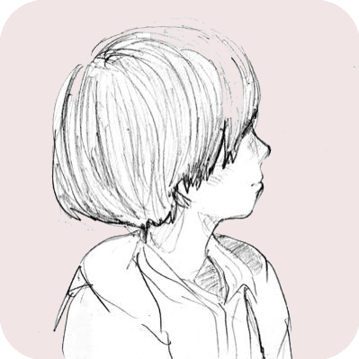
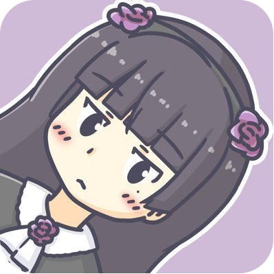
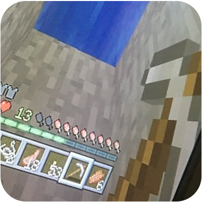

itoppy's website
itoppy's website
itoppy's website
許可を頂いたサイトへのリンク集です。
https://yuki384.github.ioYuki Mihashi's website

小中高生プログラミングサークルのECoder'sの主催者で、2018年度未踏ジュニアスーパークリエイターの三橋優希(@YukiMihashi)さんのサイトです。プログラミングとデザイン、どちらもレベルが高くて憧れています。彼女が僕のアイコンの作者です。普段から色々とお世話になっています。
https://matsudokuroneko.github.io/Kuro.'s website

プロジェクトのβ版の共有を楽にするWebサービス、「Testers Park」を作っているKuro.さんのウェブサイトです。僕のラズパイに色々ソフトをインストールしてくれました。僕が使っているGeditというエディタをインストールしてくれたのも彼です。
https://koutan1803.github.io/koutan1803's website

koutan1803さんのウェブサイトです。趣味はプログラミングと料理とテレビ局巡り。
https://ecoder-s.github.ioECoder's

優希さん主催の小中高生プログラミングサークル、ECoder'sの公式サイトです。月に一度ほど練馬区江古田で開催しています。開催情報はこちらからどうぞ。
https://student-lt.techStudent LT

日本最大の学生エンジニアコミュニティ、学生LTの公式サイトです。学生じゃなくても参加できます。開催情報はこちらからどうぞ。